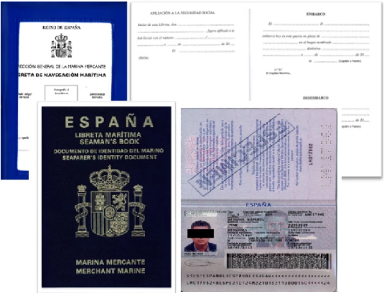

La Libreta Marítima, el pasaporte para trabajar en el mar
La Libreta Marítima es un documento oficial que también se le conoce como Cartilla de Embarque.
Esta tarjeta se trata de un pequeño libro en el que se anotan los títulos profesionales que puedes ir obteniendo así como los certificados de especialidad STCW y los embarques como tripulante en buques españoles.
Antiguamente, en este documento, se apuntaba también el resultado obtenido en el reconocimiento médico previo al embarque. Sin embargo, actualmente el certificado médico es un documento y proceso independiente.
Generalmente, se suele hablar solo de una libreta marítima o libreta de embarque como único documento, no obstante, existen dos tipos de libretas: Libreta Marítima Española y Libreta Marítima Internacional.
La principal diferencia entre ambas libretas, es que la libreta marítima española es válida para poder embarcar en buques con bandera de España pero no en buques extranjeros.
Por su lado, la libreta marítima internacional es el documento que permite poder embarcar en distintos países.
